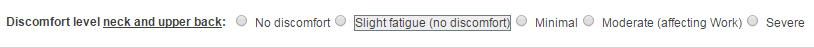

In the To Do List, click Start Evaluation from the Action column for the individual.
The evaluation worksheet will be displayed. The worksheet sections are displayed in the navigation menu on the left. You can select a section to navigate directly to that section.
Next and Previous buttons are also available at the bottom of the page for navigation. Answers and comments in each section will be saved automatically as you work (approximately every 45 seconds). You can click Save to save manually if necessary.
The employee's responses to the OES Assessment will be highlighted to allow you to compare their input with your assessment results.

Optional elements in the worksheet will depend on the worksheet configuration.
- Eyeball (shows after a recommendation): The eyeball indicates that the item is linked to the report. Hover over the icon to see what the user will see in the report about this item (typically an instruction to the user or a note that will appear in report). You can edit what will appear in the report by clicking in the box and editing as desired. To exit, click on the small X.
- +Add Recommendation: Click to add a custom recommendation. A text box will appear in which you can enter your recommendation. A checkbox (checked by default) is also displayed. When checked, the custom recommendation will be included in the employee's report. If unchecked, the recommendation will not be included in the report but will be saved in the worksheet.
- Image element: Click to add an image to record your observations visually.
Additional buttons:
- Document (document with number): Documents and handouts to provide to the employee.
- Attachments (paperclip with number): Can be used to add attachments to the employee's case file. These attachments are NOT included in the employee's report.
- PDF: Click this button to print a blank copy of the worksheet. (Will not include all elements, such as expanded sections.)
- Save: The system automatically saves the evaluation worksheet periodically (approximately every 45 seconds). Use this button for manual saves at any time.
- Report: Click to view and edit the user's report. You can edit report contents as desired. Use the Preview button to see how the report will be presented to the user. You can also save the report as a PDF if desired.